In this module you are presented with puzzles and problems to flex your analytic and quantitative thinking muscles. Most of these are well-known problems that you might run into during a job interview that is testing your problem-solving skills and your analytical thinking. In fact, several problems were culled from interview questions for quantitative and analytic positions. Others are testing your intuition about likelihoods and probability.
10.1 The Prisoner’s Dilemma
Suppose that Andy and Brie are arrested as members of a criminal gang and held separately by the police. They cannot communicate. There is enough evidence to convict them on a lesser charge, but not on the principal charge. The police offers the following deal:
If they both remain silent, they will each serve one year in prison.
If one testifies against the other, but the other one does not, the one who testified will be set free while the other serves three years in prison.
If Andy and Brie both testify against each other, they will each serve two years.
How should Andy and Brie behave to optimize their positions, that is, look out after their own interest?
The result of such a game is typically displayed in a payoff matrix that shows in each cell the payoff for the two players.
Table 10.1: Expected payoffs in prisoner dilemma
Brie remains silent
Brie testifies
Andy remains silent
\((-1, -1)\)
\((-3, 0)\)
Andy testifies
\((0, -3)\)
\((-2, -2)\)
The “payoffs” are shown in the matrix as negative numbers, as they represent a penalty, years of imprisonment. The goal is to maximize the payoff, a number as large as possible.
The best situation for Andy is to testify when Brie remains silent. He would go free in this case (and does not mind Brie spending three years behind bars). Similarly, the best situation for Brie is to testify when Andy remains silent. These are the two diagonal cells in Table 10.1.
The situation does not play out as well for them if one testifies and the other also testifies. What is the best strategy?
Nash Equilibrium
The Nash equilibrium is a concept in game theory. It applies to non-cooperative games where players compete against each other. In the equilibrium state, no player can gain an advantage by changing their strategy. This assumes that the other player’s strategies do not change.
Suppose players Andy and Brie have chosen strategies A and B, respectively. In the Nash equilibrium, there is no other strategy available to Andy that would increase his expected payoff if Brie stays with strategy B. Similarly, there is no other strategy available to Brie that would increase her expected payoff from the game if Andy stays with strategy A.
The Nash equilibrium tells us not to consider player’s action in isolation. Instead, we need to take into account what other players are expected to do in evaluating a player’s choices.
The best outcome for either Andy and Brie would be to go free. But they do not know how the other one will behave. So what is the best strategy to play this game? Let’s rephrase testifying and remaining silent in terms of defecting and collaborating players of a game.
Table 10.2: Expected payoffs in prisoner dilemma
Brie collaborates
Brie defects
Andy collaborates
\((-1, -1)\)
\((-3, 0)\)
Andy defects
\((0, -3)\)
\((-2, -2)\)
If Andy defects, his penalty will be less, regardless of whether Brie is collaborative or not (0 or 2 years compared to 1 or 3 years). The same applies to Brie, if she defects her penalty will be less regardless of what Andy does. The Nash equilibrium is that both players defect although they suffer worse penalties than if they had both cooperated.
10.2 Guarding Criminals
Suppose you are guarding \(n\) criminals in an open field. You have one gun with a single bullet. You are a good shot and being fired at means death—the criminals know that. Their behavior is governed by the following rules:
If any of them has a non-zero probability of surviving, they will attempt to escape.
If a criminal is certain of death, they will not attempt to escape.
How do you guard the criminals and stop them from escaping?
Solution
Imagine there is only a single criminal, \(n=1\). Since he/she would definitely be shot at during an escape, they would face certain death and not escape.
What happens if there are two criminals? If they both try to escape, there is a 50:50 chance to survive, hence they will both try to escape. To prevent that from happening you would tell one of the two (you do not need to tell both!) that you would shoot them, should they both attempt to escape. That criminal now faces certain death and will not escape. That brings you back to the situation with a single criminal.
How does this generalize to larger groups of criminals? Assign a number from 1 to \(n\) to the criminals and tell them that should any subgroup of them try to escape, the one with the highest number in the group will be shot.
10.3 Three Jars
Three opaque jars are sitting on a table. The jars are labeled “Apples”, “Oranges”, and “Apples & Oranges”. Unfortunately, all three are labeled incorrectly.
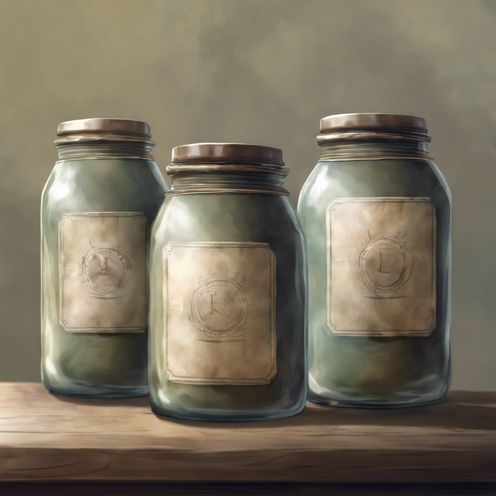
Figure 10.1: Three opaque jars.
Your task is to assign the labels correctly to the jars. What is the smallest number of fruit you have to choose in order to correctly label the three jars?
Solution
You choose one fruit from the jar that is labeled incorrectly as “Apples & Oranges”. If you pull an apple, you know this is the jar with the apples, otherwise it is the jar with the oranges. Now you have two jars left whose labels just need to be flipped since you were told that all three jars are labeled incorrectly.
10.4 Pattern Recognition #1
Figure 10.2 shows a logic reasoning puzzle. The first row makes sense if the strange operator is addition, but that does not work for the next rows. You have to find the meaning of that operator, then apply the pattern to solve the last equation.
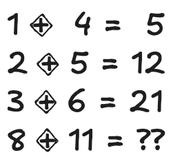
Figure 10.2: Can you solve this?
Solution
We need to find a pattern that expresses the operations in terms of familiar algebra. If the operator in Figure 10.2 is interpreted as multiplication then we get 4, 10, 18, all smaller than the values on the right hand side. How much smaller? Exactly by the left-most number. The pattern that seems to apply to the first three rows is
multiply the two numbers
then add the number on the left
Applying this pattern to the last row yields 96 as the solution (Figure 10.3).
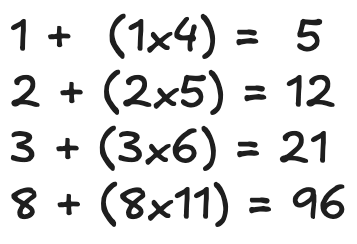
Figure 10.3: A solution.
This, by the way, is not the only solution. There are other patterns that will lead to a different result for the last row. Those patterns are equally valid. Can you find another pattern that yields a solution?
The first row is the number 1, it is also “one one”.
The second row is the number 11, it is also “two ones”.
The third row is the number 21, it is also “one two and one one”.
The pattern is that the numbers for the following row are obtained by spelling out the numbers in the current row, then replacing the words with the numbers they represent. For example, take 1211 in the fourth row. Spelling it out gives “one one one two two ones”. Now replace the words with numbers: “111221”.
The missing entry at the end of the sequence is thus \[
13112221
\]
10.6 Birthday Problem
This is a classical problem in probability, and a popular one because it is relatable yet somewhat counterintuitive. The probability is higher than what most people expect. It goes like this:
What is the probability that in a group of \(n\) randomly chosen people, at least two share the same birthday?
“Birthday” is meant as one of 365 days of the year, not adjusting for leap years. Also, we are not taking the birth year into account. A birthday for the purpose of this problem is April 10, or August 15, etc.
The standard version of the problem uses \(n=23\), because you can imagine yourself in a group of that size—a classroom, for example—and the probability of at least two shared birthdays is also relatable.
How likely do you think at least two people share a birthday in a group of 23?
Solution
The probability of at least two shared birthdays in a group of 23 is about 0.5; it is 0.05073, to be more exact. How do you interpret that? If you were to assemble groups of 23 randomly chosen people, than half of those groups would have at least two shared birthdays. Pretty high, eh?
What happens to the probability of a shared birthday when the groups get larger? How about in a group of 35 people? The probability of a shared birthday increases to 0.814. In a group of 50 people, the probability is 0.97. In a group of 100, it is virtually certain that there are at least two identical birthdays, \(p=0.999999\). With only 10 people in a group, it would be surprising to have identical birthdays, but it is not a rare event, \(p=0.117\).
For those interested, how do you calculate those probabilities? First, whenever you see the expression “at least” in a probability statement, it is probably easier to calculate the probability of the complement event and subtract that from 1. \[
\Pr(\text{at least two identical birthdays}) = 1 - \Pr(\text{no matching birthdays})
\]
What is the probability that no birthdays match in a group of \(n\)? You can compute this by considering the possible choices as people enter the group. The birthday of the first person can be chosen from 365 days, but the birthday for the second person has only 364 choices, otherwise we would have a match. Since the members of the group are chosen at random, the birthdays are independent and the probability of no matches is the product \[
\Pr(\text{no matches}) = \frac{365}{365} \times \frac{364}{365} \times \cdots \times \frac{365-n+1}{365}
\]
You can write this in terms of factorials as \[
\Pr(\text{no matches}) = \frac{1}{365^n} \frac{365!}{(365-n)!}
\] Finally, the probability of at least two shared birthdays is \[
\Pr(\text{at least two shared birthdays}) = 1 - \frac{1}{365^n} \frac{365!}{(365-n)!}
\]
If you were to compute this, you’d run into problems because the factorials are larger than what a finite precision computer can represent. The following R function uses two tricks to compute the birthday probability efficiently:
Compute the probability on the logarithmic scale, then exponentiate at the end
Use the fact that for an integer \(k\), \(k!\) is \(\Gamma(k+1)\), where \(\Gamma()\) is the Gamma function.
The lgamma function in R computes the log of the Gamma function, and that gives us access to an efficient way to compute the components of the probability on the log scale.
Imagine that you hire a consultant to work for you for five days. At the end of each day you need to pay them 1/5th of a gold bar. You have a single gold bar (worth 5 fifths) and need to cut it up so you can pay the consultant at the end of each day.
Figure 10.4: A gold bar that needs to be cut up.
What is the minimum number of cuts that allow you to pay the consultant every day?
Solution
You need only two cuts to cut the gold bar into three pieces of sizes 1/5, 1/5, and 3/5.
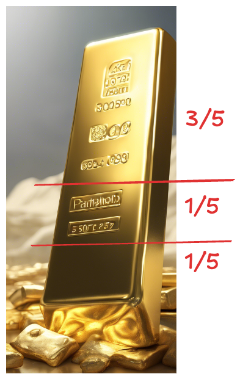
Figure 10.5: No more than two cuts are needed.
Then you pay the consultant as follows:
Day 1: give them a 1/5 gold bar
Day 2: give them the second 1/5 gold bar
Day 3: take back the two 1/5 bars and hand them the 3/5 bar
Day 4: give them a 1/5 gold bar
Day 5: give them the second 1/5 gold bar
10.8 When to Choose the Ticket
An airline has a single seat open on a flight, but \(n=100\) standby passengers hoping to get on the flight. You are one of the passengers on standby. To be fair to all standby passengers, the airline decides to drop 100 equal-sized pieces of paper into a bucket. 99 of them are blank, one says “Last Seat”. The papers are folded and shuffled in the bucket.
The standby passengers queue and each passenger gets to pick one piece of paper without replacement—that is, they keep the slip and do not return it to the bucket. Also they cannot unfold and look at the slip until all of them re drawn. After the last slip is drawn the standby passengers announce who is the lucky person that drew the “Last Seat” by checking their slip.
Here is the question: if you have your choice to pick first, second, last, or at any particular position in the queue, which position would you choose?
Solution
It does not matter when you draw the paper if the pieces were properly shuffled. This is a completely random sample even if the sampling is done sequentially. Your chance of drawing the “Last Seat” slip is 1/100, whether you draw first, last, or at any other position in the queue.
Note that this would be different if passengers would announce the result of their draws before the next draw. The conditional probability of choosing the “Last Seat” slip on the next draw increases with every bank slip that preceded.
10.9 How Many Squares on a Chessboard
A chess board is made up of eight rows and columns of black and white positions (Figure 10.6). How many squares are on a board?
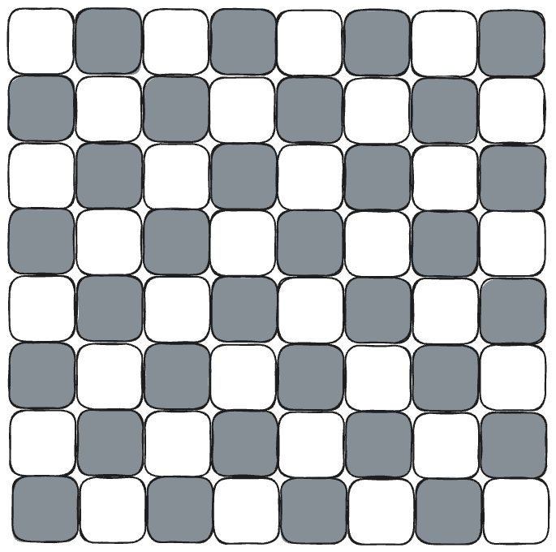
Figure 10.6: Chess board.
Solution
The quick answer is \(8 \times 8 = 64\) squares. However, that is only part of the story. The entire board is a single square as well, made up of the 64 individual squares. And we could place all kinds of \(2 \times 2\) squares inside the larger frame.
If you think about it for a bit there are \(8^2\) squares of size \(1 \times 1\), \(7^2\) squares of size \(2 \times 2\), \(6^2\) squares of size \(3 \times 3\) and so on. The total number of squares on a chess board is
Suppose you are working in a library and are sorting books from a box that contains 32 fiction (F) and 17 non-fiction (NF) books. A steady supply of new books is available to add to the box. Your sorting algorithm goes as follows:
You randomly choose 2 books from the box.
Based on the types of books chosen you add another book from the supply to the box:
if you choose two fiction books (F,F) you add a new fiction book to the box
if you choose two non-fiction books (NF, NF) you also add a fiction book to the box
if you choose one fiction and one non-fiction book (F,NF or NF,F) then you add a non-fiction book to the box.
Since you add only one book to the box for every two books you remove, the box will eventually be empty. What is the type of the last book in the box? Is it a fiction or a non-fiction book?
Solution
The number of books in the bin goes down by one with each cycle: two books are removed from the bin, one book is added. How does this affect the number of fiction and non-fiction books that remain?
Let’s see how the number of non-fiction books in the bin changes in cases 1.–3. In the first case, there is no change. In the second case, the number of non-fiction books goes down by 2. In the third case, the number of non-fiction books also does not change: one is removed, one is added.
Since the number of NF books initially is an odd number, 17, we can conclude that after each cycle the number of NF books remains an odd number. It can never be an even number. Which leads to the conclusion that if there is only one book left in the bin it must be a non-fiction book.
10.11 Inverted Triangle
Figure 10.8 shows a triangle made from 10 coins. Can you change this into an upside-down triangle by moving only 3 coins?
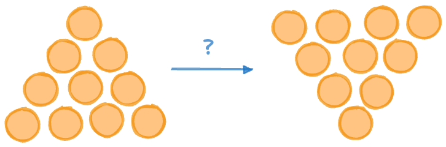
Figure 10.8: Inverting the coin triangle.
Solution
The solution is shown in Figure 10.9. First, focus on the seven coins in the center of the triangle. The original and the inverted triangle share these; they do not need to move at all. We can focus on the three coins at the edges.
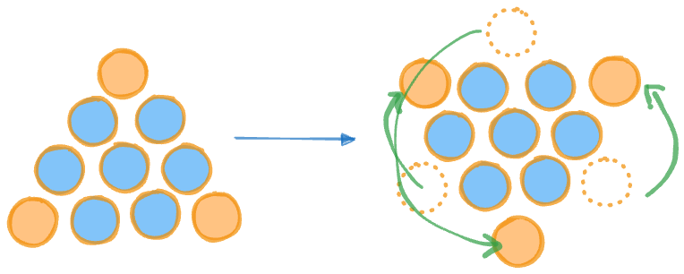
Figure 10.9: Moving the three coins.
10.12 The Spare Tire
Your car has four tires mounted to the wheels and a spare tire (S). That gives you five tires to work with. Each of the tires lasts at most 30,000 miles. If you can exchange tires among the five as many times as you wish, what is the furthest distance you can travel before you need to purchase a new tire?
Figure 10.10 depicts the initial tire life prior to driving the first mile. All tires, including the spare (S) have the same life expectancy of 30,000 miles.
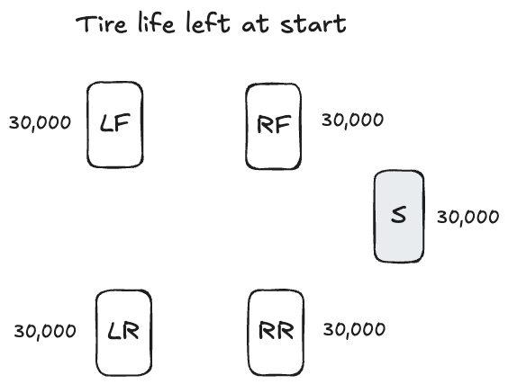
Figure 10.10: Tire life before driving the first mile.
Solution
The maximum total distance the five tires could travel before they are all worn out is 30,000 x 5 = 150,000 miles. The minimum distance of travel before you have to buy at least one new tire is 30,000 miles; it is achieved if you do not use the spare tire and run down the four tires currently mounted.
By optimizing how you use the spare tire, there must be an achievable distance between 30,000 and 150,000 miles. The optimal strategy is to wear all tires equally and to use the spare tire as much as possible. But we cannot use the spare for more than 30,000 miles, same as with the other four tires.
If the four tires on the car are equally worn, we can go at most 150,000/4 = 37,500 miles. The strategy is to get 30,000 miles from each of the tires on the car and 4 times 7,500 = 30,000 miles from the spare tire. In other words, the spare will have to give each of the four tires a 7,500 mile break.
Figure 10.11 shows how the spare tire is rotated for another tire after each leg of 7,500 miles. The right rear tire comes off after the fourth leg, it is worn out. The other tires still have 7,500 miles of life to go.
Figure 10.11: Remaining tire life after 7,500, 15,000, 22,50, and 30,000 miles., miles
10.13 Robot Triangle
There are many versions of this basic puzzle, using ants, camels, and other animals. We use robots here, the puzzle goes like this. Three robots are placed at the corners of a triangle. A robot can choose to move along either side of the triangle that meet at its corner (Figure 10.12). What is the probability that any two robots will collide?
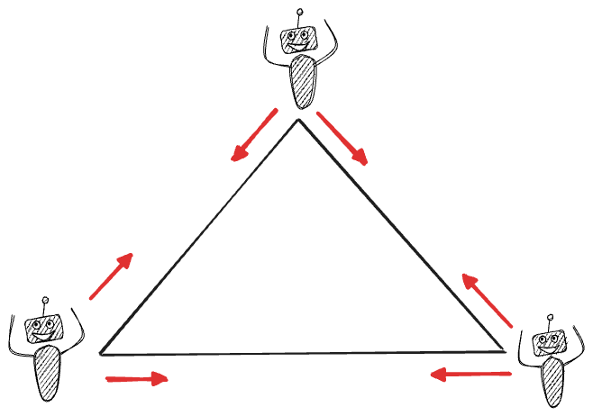
Figure 10.12: Robot triangle.
Solution
Each robot has two possible movements, so there are a total of 2 x 2 x 2 = 8 possible moves on the triangle. There are two ways in which there won’t be any collisions, if all choose to go clockwise or counter-clockwise. In those cases they will follow each other around the triangle (Figure 10.13).
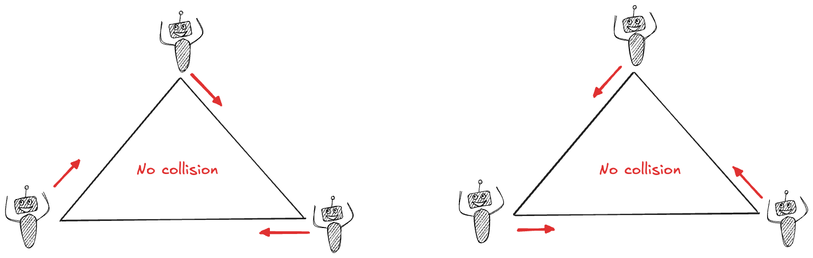
Figure 10.13: Robots moving without running into each other.
Any other choice of movements will result in at least one collision. So the probability of any collision if the robots choose their movements at random is 6/8 = 3/4. There is a 75% chance that any two robots will collide.
10.14 Truth Telling
This puzzle is about logic reasoning and not about probability. Surprisingly, it is related to the previous robot movement puzzle.
Consider the following three statements:
Gavin says that Brian is a liar.
Brian says that Jenn is a liar.
Jenn says that both Gavin and Brian are liars.
Who is telling the truth and who is lying?
Solution
This puzzle is related to the robot movement in that there are \(2^3 = 8\) possible choices, each of the three characters could either be truthful or lying. It is different from the robot movement in that it is not a question of probability. While robots choose one of the two directions at random, our characters are either lying or telling the truth. We have to reason which one it is.
With 8 possible choices you can go about it by finding combinations that are inconsistent, a process of elimination.
Suppose that Jenn tells the truth. Then Gavin and Brian are liars. According to Gavin’s statement, that would mean Brian is telling the truth. But Brian’s statement contradicts the assumption that Jenn tells the truth. Jenn must be a liar.
If Jenn is not telling the truth, there are three possibilities:
Gavin is truthful and Brian is not
Gavin is a liar and Brian is truthful
Both are truthful.
Let’s look at the first option. If Gavin tells the truth than Brian is lying, which means Jenn would be truthful. We already ruled out this possibility. But if Gavin is not truthful, then 3. cannot be the case either.
We are down to the second option: Brian speaks the truth and the other two are liars. Let’s see if everything makes sense in this scenario: If Gavin does not speak the truth, then Brian is not a liar. Brian’s statement that Jenn is a liar is consistent with what we already found.
Conclusion: Only Brian is truthful.
10.15 Clock Made With Matches
You have two wooden sticks and a box of matches. When a sticks is lit it will burn completely in exactly one hour. How do you use these ingredients to measure exactly 45 minutes?
Solution
Light the first stick on one end and light the second stick on both ends. Since an entire stick burns in one hour, the stick lit on both ends will burn down in 30 minutes (Figure 10.14).
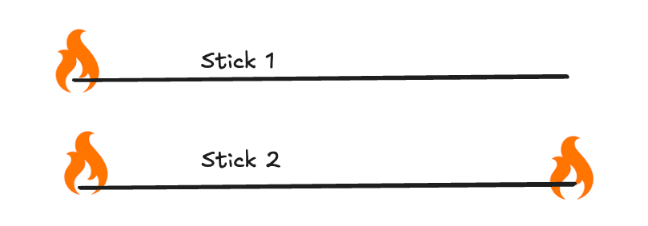
Figure 10.14: Initial lighting of sticks.
At that point light the first stick on the other end. This will double the speed with which that stick, now reduced to 30 minutes burn time, will burn.
When the first stick is completely burned down, 45 minutes will have passed (Figure 10.15).
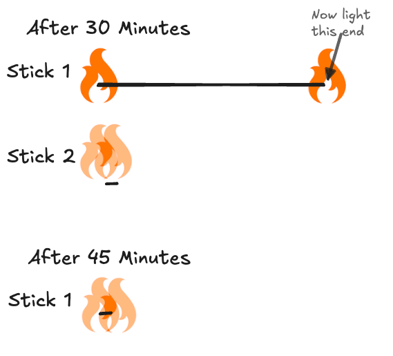
Figure 10.15: After 30 minutes, light the other end of the first stick.
10.16 Two Stacks of Cards
You have two stacks of cards. The first is a regular 52-card deck. The second stack contains two regular 52-card decks, thus has 104 cards. Both stacks are shuffled well. You choose two cards in sequence and you win if they are both red. Would you prefer to choose from the 52-card stack or the 104-card stack?
Solution
You want to choose from the larger stack. The probability to draw two red cards in sequence from a stack of \(n\) cards (with \(n/2\) red ones) is \[
\frac{n/2}{n} \times \frac{n/2-1}{n-1}
\] For the first draw the probabilities are identical: \(26/52\) and \(52/104\). But for the second draw the probabilities are \[
\frac{51}{103}=0.495 > \frac{25}{51}=0.49
\]
There is a slightly higher chance to draw two red cards from the larger stack.
10.17 Rapid Fire
Cowboy Billy carries a Colt single action 6 shooter revolver. When he fires all 6 shots in a row, the time between the first bullet and the last is 60 seconds. How long would it take him to fire 3 shots?
Solution
It will take him 24 seconds to fire three shots. Wait, what?
The relevant pattern here is about the time elapsed between shots. If the shots are fired at regular intervals, then Billy will take 12 seconds between the six shots. 12 seconds after the first shot he fires the second bullet, 12 seconds after that he fires the third bullet.
Another way of thinking about this is the distance at which fence posts are placed. In a fence with six posts, the first one is at 0/5th total distance, the second post is located 1/5th of the total distance, and so on.
10.18 Crossing the River
A farmer is on his way back from the market, with him he has a fox, a chicken and some grain. To get home he needs to cross a river using a small boat that can accommodate only him and one of the other items. Unfortunately, if the fox is left alone with the chicken it will eat it. If the chicken is left alone with the grain, it will eat it. How can the farmer cross the river and bring home the fox, the chicken, and the grain?
Solution
This will take several trips across the river:
He takes the chicken across the river.
He returns in an empty boat and picks up the fox.
He takes the fox across the river and picks up the chicken.
He returns with the chicken in the boat and deposits it while picking up the grain.
He takes the grain across the river. Now he has the chicken on the near side of the river and the fox and the grain on the far side.
He returns in an empty boat and picks up the chicken.
He takes the chicken across the river, now all three items have crossed.
The trick is to take one item—here, the chicken—back and forth to make sure it is not alone with the item it would destroy.
Figure 10.11: Remaining tire life after 7,500, 15,000, 22,50, and 30,000 miles., miles
{kind=link}